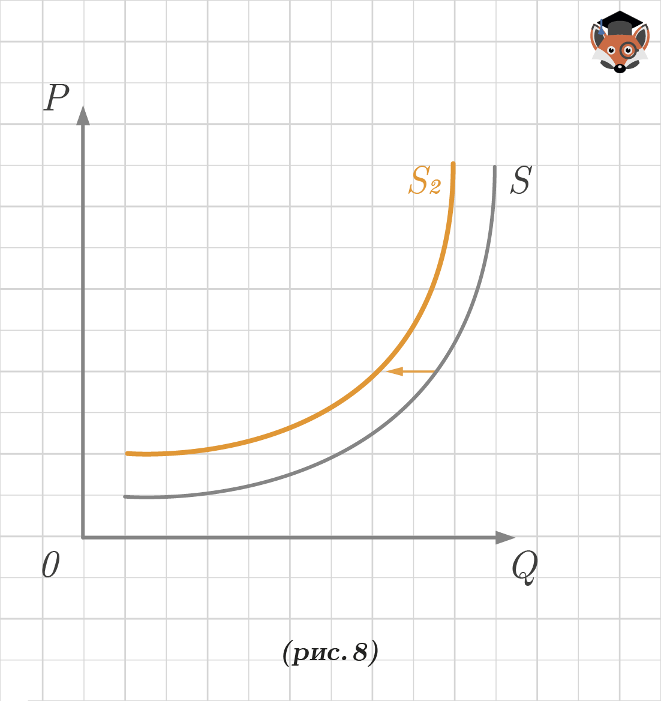

Основные параметры, регулирующие поведение участников рынка: спрос, предложение и цена, между которыми существует взаимная связь.
Спрос — это желание потребителя купить конкретный товар или услугу по конкретной цене в течение определённого периода времени, подкреплённое готовностью оплатить покупку.
Величина спроса — это объём (количество) товара определённого вида, который покупатели готовы (хотят и могут) приобрести в течение определённого периода при определённом уровне цены на этот товар.
Рассмотрим типовой график с изображением кривой спроса (D). (рис. 1) На оси абсцисс откладывается количество товаров/услуг (Q), на оси ординат — цена на товар/услугу (Р). Спрос может изменяться под воздействием одного или нескольких различных факторов. Графики изменения спроса, рассматриваемые далее, отображают ситуации изменения спроса в связи с неценовыми факторами (например, мода, сезонность и т. д.), т. е. при постоянных ценах.
{kind=link}
Спрос может изменяться: увеличиваться или уменьшаться. Графически изменение спроса отражается изменением положения кривой спроса (D), то есть её перемещением на плоскости (рис. 2) из позиции кривой D к D1. Если происходит движение вправо, дальше от осей координат, то речь идёт об увеличении спроса. Это легко проверить, выбрав точку на обеих кривых с одинаковой ценой и сравнив количество товаров/услуг, на которые есть спрос по такой цене.
{kind=link}
Аналогично можно рассмотреть и уменьшение спроса:
{kind=link}
Если происходит движение влево, ближе к осям координат, то речь идёт об уменьшении спроса, из позиции кривой D к D2 (рис. 3).
Линии спроса могут быть представлены и в виде прямых, никаких принципиальных отличий в данном случае это не имеет. (рис. 4):
{kind=link}
Теперь можно рассмотреть графически изменение величины спроса (рис. 5).
{kind=link}
Изменение величины спроса графически отображается не сдвигом всей кривой, а движением по кривой спроса (D), то есть перемещением, например, из точки ** к D2. В данном случае, наоборот, учитывается ценовой фактор, а иные факторы рассматриваются как неизменные. Прослеживается закономерность: чем дороже товар/услуга, тем меньше желающих его/её приобрести. Цена Р1 высокая, количество товаров, приобретённых по такой цене — Q1, небольшое. Однако по невысокой цене Р2 количество покупок Q2 существенно выше.
Это действительно для большинства товаров/услуг, иначе называемых нормальными, спрос на которые увеличивается при увеличении доходов потребителя. Исключениями являются, например, низшие товары Гиффена, спрос на которые будет уменьшаться.
Взаимосвязь между изменением спроса и величины спроса проявляется в следующем: когда спрос увеличивается, повышаются объёмы спроса при всех ценах, и наоборот. Например, стоимость недорого вафельного стаканчика с мороженым 20 рублей, а эскимо — 100 рублей. В летний сезон, когда спрос на мороженое в целом повышается, покупают больше и стаканчиков, и эскимо.
Цена — денежное выражение стоимости товаров и услуг.
Цена спроса — максимальная цена, по которой потребители готовы купить некоторое количество товара за определённый период времени.
Этот график (рис. 5) иллюстрирует один из важнейших законов экономики: закон спроса.
Закон спроса: повышение цен обычно ведёт к снижению величины спроса, а снижение цен — к её увеличению.
Основные неценовые факторы спроса:
-
цены на сопряжённые товары (товары-субституты и комплементы). Товары-субституты — взаимозаменяемые товары, повышение цены на один из которых ведет к повышению спроса на другой, и наоборот;
-
цены на комплементарные товары — взаимодополняемые товары, повышение цены на один из которых ведет к уменьшению спроса на другой, и наоборот;
-
число покупателей;
-
ожидания изменения цены;
-
потребительские предпочтения;
-
мода;
-
доход потребителя и др.
Предложение — это желание производителя произвести и предложить к продаже на рынке свои товары по конкретным ценам из ряда возможных цен в течение определённого периода времени.
Величина предложения — это объём (количество) товара определенного вида, который производители готовы (хотят и могут) предложить в течение определённого периода при определённом уровне цены на этот товар.
Аналогично рассмотрим типовой график с изображением кривой предложения (S). (рис. 6) На оси абсцисс откладывается количество товаров/услуг (Q), на оси ординат — цена на товар/услугу (Р). Предложение также может изменяться под воздействием одного или нескольких различных факторов. Графики изменения предложения, рассматриваемые далее, отображают ситуации изменения предложения в связи с неценовыми факторами (например, мода, количество производителей на рынке и т. д.), т. е. при постоянных ценах.
{kind=link}
Предложение может изменяться: увеличиваться или уменьшаться. Изменение предложения отражается изменением положения кривой предложения (S), то есть её перемещением на плоскости (рис. 7) из позиции кривой S к S1. Если происходит движение вправо, дальше от осей координат, то речь идёт об увеличении предложения.
{kind=link}
Аналогично можно рассмотреть и уменьшение предложения:
{kind=link}
Если происходит движение влево, ближе к осям координат, то речь идёт об уменьшении предложения, из позиции кривой S к S2 (рис. 8).
Линии предложения также могут быть представлены и в виде прямых (рис. 9):
{kind=link}
Изменение величины предложения есть движение вдоль кривой предложения (S) из позиции точки S1 к S2 при неизменности факторов предложения. В данном случае, наоборот, учитывается ценовой фактор, а иные факторы рассматриваются как неизменные. Прослеживается закономерность: чем дороже товар/услуга, тем больше желающих по такой цене его продать.
Взаимосвязь между изменением предложения и величины предложения проявляется в следующем: когда предложение увеличивается, повышаются объёмы предложения при всех ценах, и наоборот. Например, в сезон продажи фруктов предлагают больший ассортимент по самым разным ценам.
Цена предложения — минимальная цена, по которой продавцы готовы продать некоторое количество данного товара за определённый период времени.
Этот график (рис. 10) иллюстрирует один из важнейших законов экономики: закон предложения.
Закон предложения: повышение цен обычно ведёт к росту величины предложения, а снижение цен — к её уменьшению.
Основные неценовые факторы предложения:
-
цены на ресурсы;
-
технология производства;
-
число продавцов на рынке;
-
ожидания изменения цен;
-
цены на другие товары;
-
мода;
-
налоги и дотации и др.
Неценовые факторы могут быть общими и для спроса, и для предложения, а могут относиться только к покупателям/производителям.
{kind=link}
Графически пересечение кривых спроса и предложения происходит в некой точке А, называемой точкой равновесия. Это компромисс между желаниями и возможностями потребителя и производителя. Товар/услуга реализовывается по равновесной цене (цене, по которой покупатель готов купить, а продавец готов продать товар или оказать услугу).